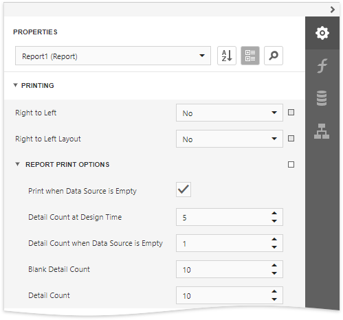

Limit the Number of Records to Display
Use Report Print Options to filter records displayed in Print Preview. You can specify them in the Properties panel.
Limit the Number of Records
The Detail Count at Design Time property enables you to limit the number of records a report shows in Print Preview embedded into the Report Designer. 
Use the Detail Count option to define how many times to print the Detail band when generating a report document to display in Print Preview.
Print on Empty Data Source
Disable the Print when Data Source is Empty option to avoid generating a report when its data source is empty. You can use this setting in master-detail reports to hide the detail report if its data source contains no records.
The Detail Count when Data Source is Empty property allows you to specify how many times to print the Detail band when a report does not have a data source. You can use this property to create static reports that are not connected to a data source and display the same static content several times.